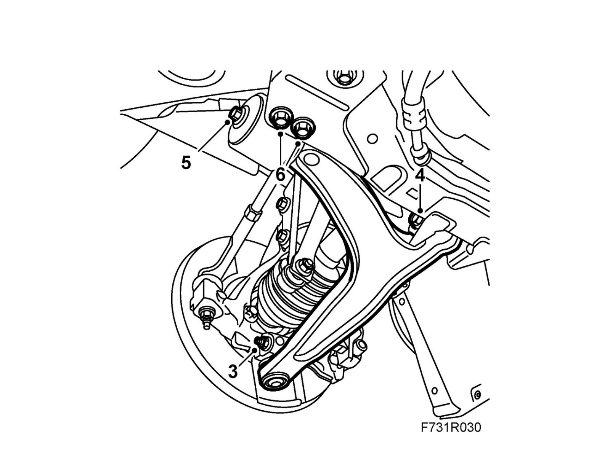

Control Arm: Service and Repair
Suspension armTo remove
1. Raise the car.
2. Remove the front wheel.
3. Remove the bolt holding the suspension arm to the steering swivel member.
Left-hand suspension arm and cars with xenon lights:Remove the level sensor.

4. Disassemble the suspension arm front attachment to the subframe.
5. Slacken the bolt which holds the rear bush to the suspension arm.
6. Remove the rear bush from the subframe.
7. Remove the suspension arm from the steering swivel member and lift away the suspension arm.
To fit
1. Lift up the suspension arm and fit the bolt for the front bush.
2. Fit the rear bush to the subframe.
Tightening torque 65 Nm +90° (48 lbf ft +90°)
3. Fit the suspension arm to the steering swivel member with a new nut. Hold the bolt with a wrench so that the bolt does not rotate.
Warning
Press up the pin carefully.
The groove in the pin must be visible in the screw hole in the spindle housing.
If the rubber gaiter is pressed down, it will not seal properly to the swivel pin.
Tightening torque 50 Nm (37 lbf ft)
4. Remove the anti-roll bar link from the anti-roll bar and lift the suspension arm up to normal position.
5. Tighten the front suspension arm attachment.
Tightening torque 65 Nm +90° (48 lbf ft +90°)
6. Tighten the bolt holding the rear bush to the suspension arm.
Tightening torque 40 Nm +30° (30 lbf ft +30°)
7. Fit the anti-roll bar link.
Tightening torque 64 Nm (47 lbf ft)
Left-hand suspension arm and cars with xenon lights: Fit the level sensor.
8. Fit the wheel.
9. Lower the car to the floor.
10. Carry out four wheel checking and alignment, see Four wheel alignment.